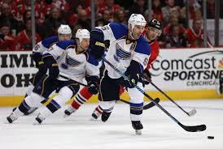
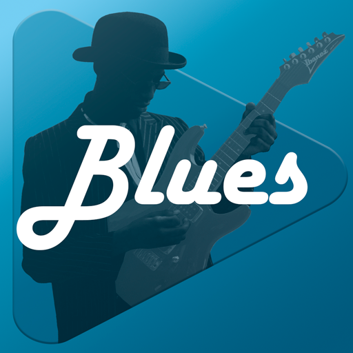
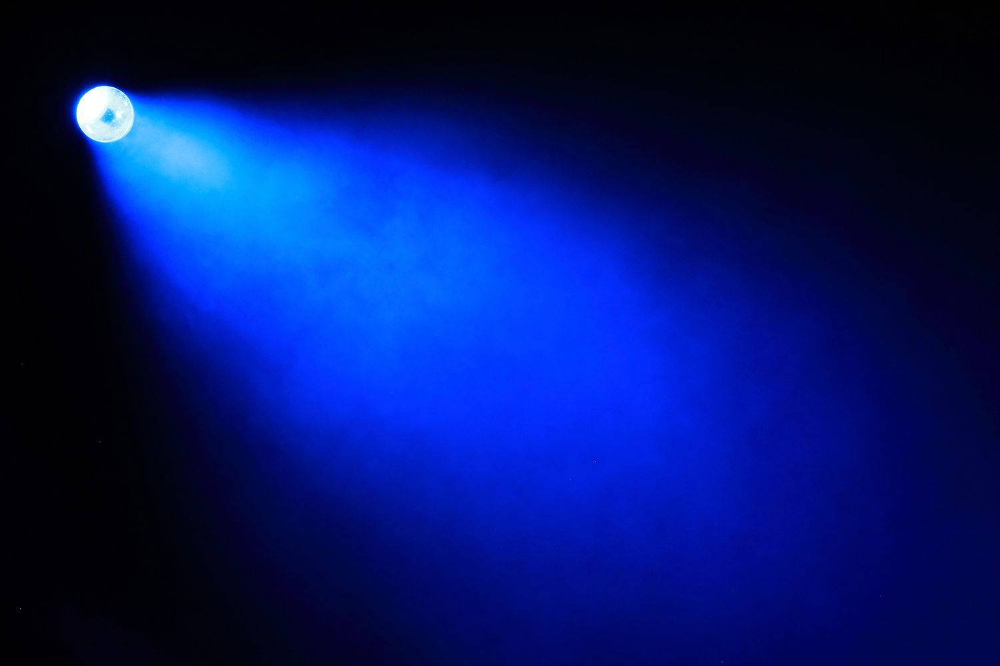

Blue is a primary color in RGB and RYB models, located between violet and cyan in the visible spectrum with wavelengths of 450–495 nanometers. It evokes feelings of calmness, trust, and stability, often associated with the sky and sea. Common shades include navy, azure, and cyan.

The St. Louis Blues are a professional ice hockey team based in St. Louis. The Blues compete in the National Hockey League as a member of the Central Division in the Western Conference. The franchise was founded in 1967 as one of the six teams from the 1967 NHL expansion and is named after the W. C.

Blues is a music genre[3] and musical form that originated among African Americans in the Deep South of the United States around the 1860s. Subgenres:

Blue light is a high-energy visible (HEV) light component (380-500 nm) primarily emitted by the sun, as well as digital screens and LED lighting